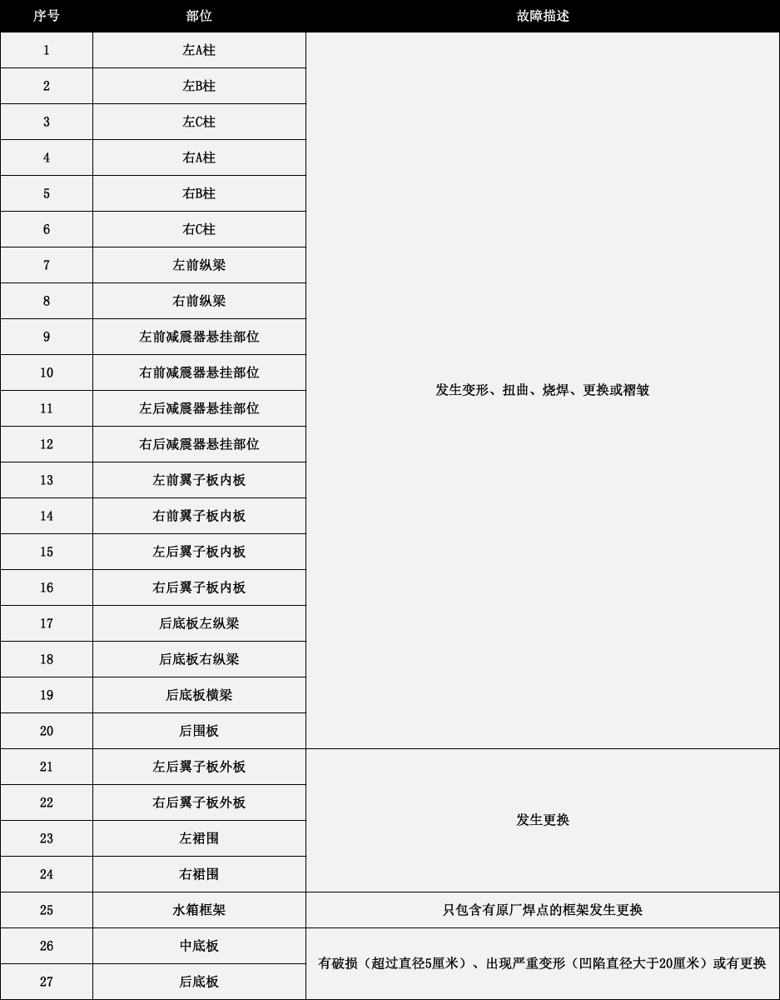

大搜车明确定义了事故车、火烧车、水浸车的判断标准。
承诺全网车辆描述与实际相符，让二手车交易更透明。
一、什么是事故车？
下表列示的任意“部位”符合其“故障描述”的车辆即为事故车
二、什么是火烧车？
符合以下任意一条描述的车辆即为火烧车：
1. 发动机线束和车身线束更换新件及局部地方有火烧痕迹；
2. 发动机线束和车身线束有火烧熔线及局部地方有火烧痕迹；
3. 车身各夹层内有火烧熏黑的痕迹；
4. 发动机舱、车厢内或尾箱内有烧黑痕迹。
三、什么是水浸车？
同时符合以下任意两条或两条以上描述的车辆即为水浸车：
1. 座椅底部的金属支架和滑轨有非自然锈蚀；
2. 安全带抽到底，有水迹或霉斑；
3. 车底板上有一层用来隔音、隔热的棉毡，棉毡上有水渍或泥沙；
4. 悬挂组件的固定螺丝及刹车挡板有非自然锈蚀；
5. 备胎座有水渍或污泥；
6. 驾驶舱内地胶或地毯有拆卸痕迹并有水迹、污渍。